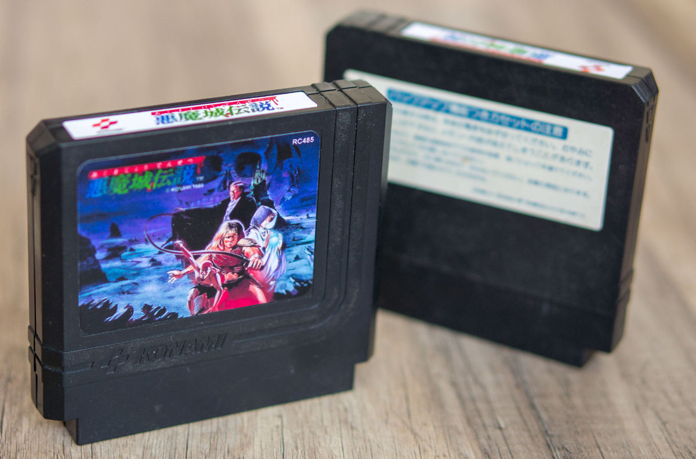

Репродукція Castlevania III - Dracula's Curse
Akumajou Densetsu


Репродукція Akumajou Densetsu на основі оригінального картриджа Famicom, у якому використовується чіп VRC6, із вбудованим аудіо розширенням. На клонах типу "Dendy" працює без проблем.
Можливий запис одного з ромів:
Akumajou Densetsu (J) [!].nes - Оригінальний ром японською мовою;
Akumajou Densetsu (J) [T+Eng1.0_Vice Translations].nes - Японська версія з англійським перекладом;
Akumajou Densetsu (J) [T+RusBeta_Cool-Spot].nes - Японська версія з російсько-англійським перекладом.
Також ви можете надати свій ром. Головне, щоб його розмір був не більшим за 384КБ.
Ціна готової продукції 600грн. (Корпус + Плата + Наклейка)
Зв'язатися зі мною можна по Viber, Telegram, Телефон +380992028599 Кузнєцов Євген
Надсилання: Нова Пошта/Укрпошта. Оплата: накладний платіж/Приват